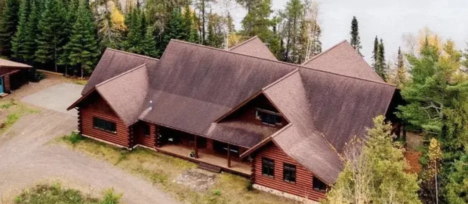
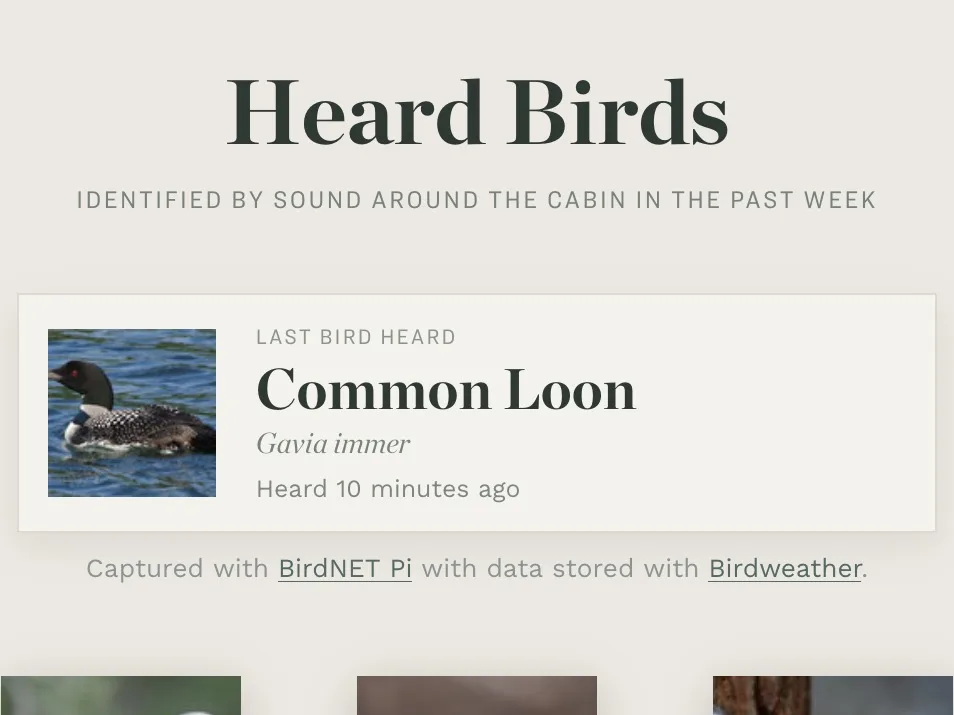
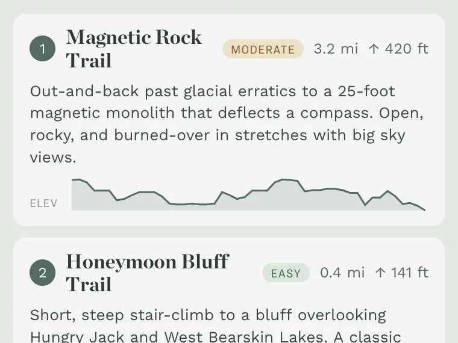
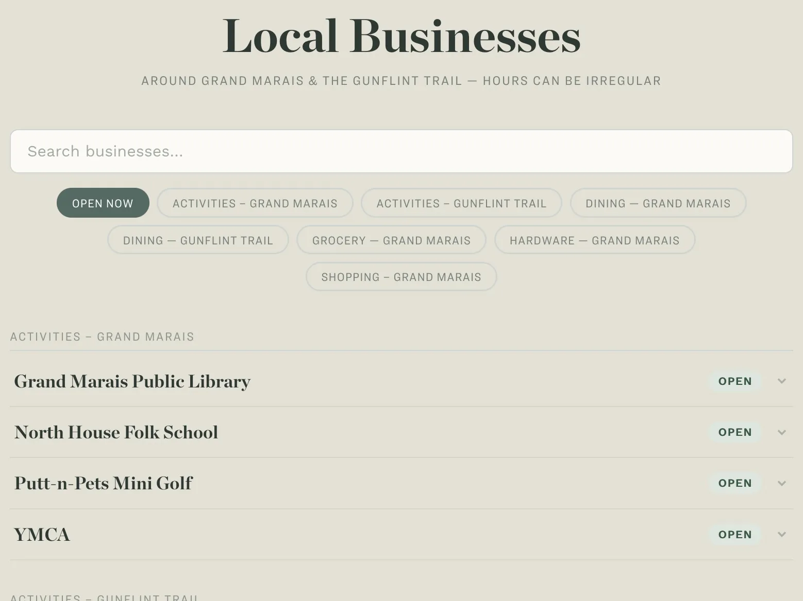

Benwalden

A site for our cabin on the Gunflint Trail in Northern Minnesota. It works fully offline, and pulls in live data from the property — a Tempest weather station’s forecast, birds identified by sound around the cabin via a BirdNET Pi, and hours for nearby businesses. It also maps hiking trails along the Gunflint with offline elevation profiles built from OpenStreetMap and USGS elevation data.


